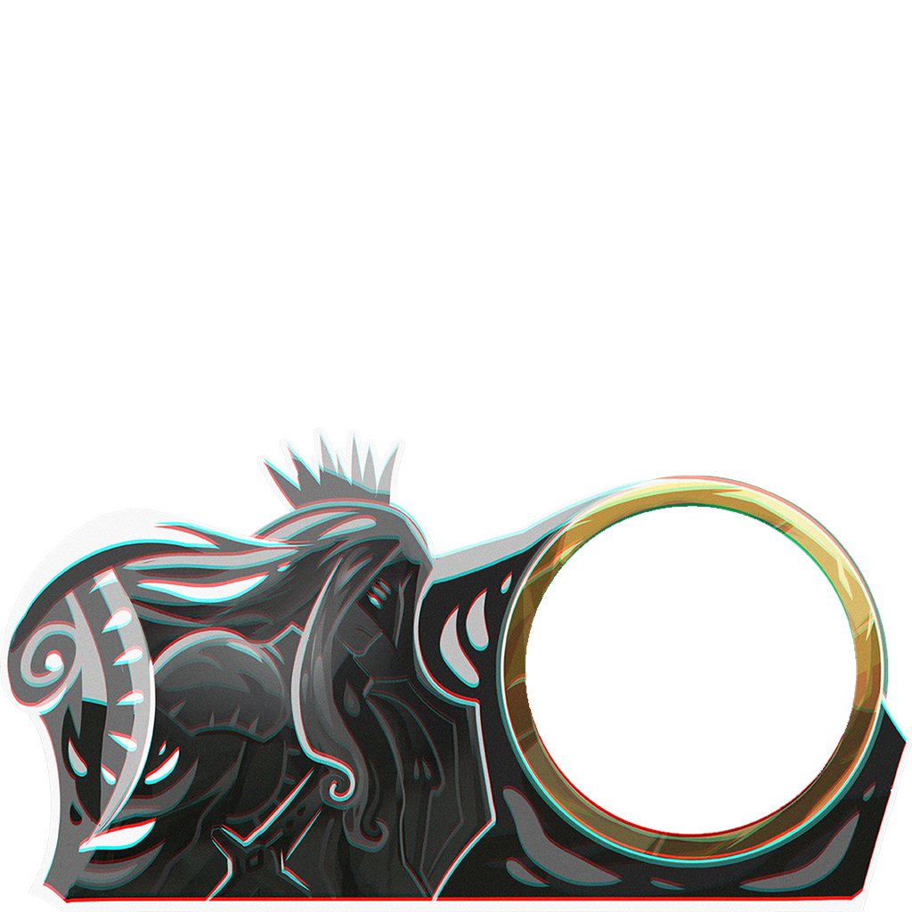
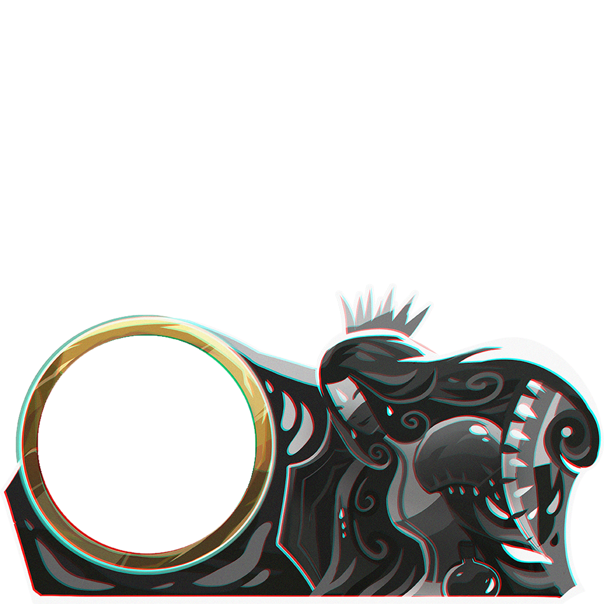

The bubbling here is procedural, standing in for the spritesheet. The sloshing is
procedural on purpose and stays that way: it scales with how big the HP change was, which a fixed sprite
loop cannot do. Hit the buttons — a chip barely ripples, a big hit heaves and overshoots before settling.


How the motion is built. The fill level is a damped spring toward the target, so a change overshoots
and settles rather than snapping. Its velocity feeds two things: a tilt that tips the surface like
liquid in a glass being moved, and a slosh amplitude added on top of the idle ripple, decaying back
to baseline. Bubbles rise and pop at the surface, and speed up briefly after a hit. Not simulated here: the real spritesheet texture, and the low-HP treatment (the game already tints
the bar at <50% and <20%, so the orb should probably darken and beat faster there).